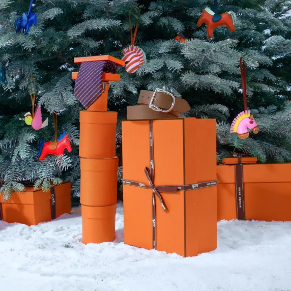

Rouge Feu, Rouge Cinabre and Rouge Grenat make up this new limited edition collection.
Discover the collection
Once upon a time
Once upon a time there was a white horse living in a far-off meadow. Feeling adventurous, the white horse wanted to join an aerobics class, but he didn’t have the right outfit. Luckily, his friend the rabbit suggested a much more surprising journey…Follow the rabbit
High attitude
For winter, women's shoes take the high ground with innovative and elegant details.Scale the heights
The highest jump
After traveling for many days, the horse and the rabbit arrive in the city. Heavy snow starts to fall, and they lift their eyes skywards. The rabbit whispers a magic spell, and the horse makes the highest jump in the history of all jumps, landing on an incredible rooftop…Jump onto the roof
Podcasts from Le Monde d’Hermès
This series of podcasts invites some surprising protagonists of everyday life to share a moment of lightness with us.Discover the episodes
The weight of imagination
What does a sunbeam weigh? Or a summer breeze? What about words or ideas? All will be revealed by listening to my story. Created in the petit h workshop, I am a set of scales that loves to weigh everything you could possibly imagine…

Let’s keep the conversation going
Receive our newsletter and discover our stories, collections, and surprises.